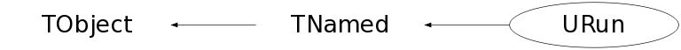

Function Members (Methods)
public:
| URun() | |
| URun(const URun&) | |
| URun(const char* generator, const char* comment, Int_t aProj, Int_t zProj, Double_t pProj, Int_t aTarg, Int_t zTarg, Double_t pTarg, Double_t bMin, Double_t bMax, Int_t bWeight, Double_t phiMin, Double_t phiMax, Double_t sigma, Int_t nEvents) | |
| virtual | ~URun() |
| void | TObject::AbstractMethod(const char* method) const |
| virtual void | TObject::AppendPad(Option_t* option = "") |
| virtual void | TObject::Browse(TBrowser* b) |
| static TClass* | Class() |
| virtual const char* | TObject::ClassName() const |
| virtual void | TNamed::Clear(Option_t* option = "") |
| virtual TObject* | TNamed::Clone(const char* newname = "") const |
| virtual Int_t | TNamed::Compare(const TObject* obj) const |
| virtual void | TNamed::Copy(TObject& named) const |
| virtual void | TObject::Delete(Option_t* option = "")MENU |
| virtual Int_t | TObject::DistancetoPrimitive(Int_t px, Int_t py) |
| virtual void | TObject::Draw(Option_t* option = "") |
| virtual void | TObject::DrawClass() constMENU |
| virtual TObject* | TObject::DrawClone(Option_t* option = "") constMENU |
| virtual void | TObject::Dump() constMENU |
| virtual void | TObject::Error(const char* method, const char* msgfmt) const |
| virtual void | TObject::Execute(const char* method, const char* params, Int_t* error = 0) |
| virtual void | TObject::Execute(TMethod* method, TObjArray* params, Int_t* error = 0) |
| virtual void | TObject::ExecuteEvent(Int_t event, Int_t px, Int_t py) |
| virtual void | TObject::Fatal(const char* method, const char* msgfmt) const |
| virtual void | TNamed::FillBuffer(char*& buffer) |
| virtual TObject* | TObject::FindObject(const char* name) const |
| virtual TObject* | TObject::FindObject(const TObject* obj) const |
| Int_t | GetAProj() const |
| Int_t | GetATarg() const |
| Double_t | GetBetaCM() |
| Double_t | GetBMax() const |
| Double_t | GetBMin() const |
| Int_t | GetBWeight() const |
| void | GetComment(TString& comment) |
| void | GetDecayer(TString& decayer) |
| virtual Option_t* | TObject::GetDrawOption() const |
| static Long_t | TObject::GetDtorOnly() |
| Double_t | GetGammaCM() |
| void | GetGenerator(TString& generator) |
| virtual const char* | TObject::GetIconName() const |
| virtual const char* | TNamed::GetName() const |
| Int_t | GetNEvents() const |
| virtual char* | TObject::GetObjectInfo(Int_t px, Int_t py) const |
| static Bool_t | TObject::GetObjectStat() |
| virtual Option_t* | TObject::GetOption() const |
| Double_t | GetPhiMax() const |
| Double_t | GetPhiMin() const |
| Double_t | GetPProj() const |
| Double_t | GetProjectileEnergy() |
| Double_t | GetPTarg() const |
| Double_t | GetSigma() const |
| Double_t | GetSqrtS() |
| Double_t | GetTargetEnergy() |
| virtual const char* | TNamed::GetTitle() const |
| virtual UInt_t | TObject::GetUniqueID() const |
| Int_t | GetZProj() const |
| Int_t | GetZTarg() const |
| virtual Bool_t | TObject::HandleTimer(TTimer* timer) |
| virtual ULong_t | TNamed::Hash() const |
| virtual void | TObject::Info(const char* method, const char* msgfmt) const |
| virtual Bool_t | TObject::InheritsFrom(const char* classname) const |
| virtual Bool_t | TObject::InheritsFrom(const TClass* cl) const |
| virtual void | TObject::Inspect() constMENU |
| void | TObject::InvertBit(UInt_t f) |
| virtual TClass* | IsA() const |
| virtual Bool_t | TObject::IsEqual(const TObject* obj) const |
| virtual Bool_t | TObject::IsFolder() const |
| Bool_t | TObject::IsOnHeap() const |
| virtual Bool_t | TNamed::IsSortable() const |
| Bool_t | TObject::IsZombie() const |
| virtual void | TNamed::ls(Option_t* option = "") const |
| void | TObject::MayNotUse(const char* method) const |
| virtual Bool_t | TObject::Notify() |
| static void | TObject::operator delete(void* ptr) |
| static void | TObject::operator delete(void* ptr, void* vp) |
| static void | TObject::operator delete[](void* ptr) |
| static void | TObject::operator delete[](void* ptr, void* vp) |
| void* | TObject::operator new(size_t sz) |
| void* | TObject::operator new(size_t sz, void* vp) |
| void* | TObject::operator new[](size_t sz) |
| void* | TObject::operator new[](size_t sz, void* vp) |
| URun& | operator=(const URun&) |
| virtual void | TObject::Paint(Option_t* option = "") |
| virtual void | TObject::Pop() |
| void | Print(Option_t* option = "") |
| virtual Int_t | TObject::Read(const char* name) |
| virtual void | TObject::RecursiveRemove(TObject* obj) |
| void | TObject::ResetBit(UInt_t f) |
| virtual void | TObject::SaveAs(const char* filename = "", Option_t* option = "") constMENU |
| virtual void | TObject::SavePrimitive(basic_ostream<char,char_traits<char> >& out, Option_t* option = "") |
| void | TObject::SetBit(UInt_t f) |
| void | TObject::SetBit(UInt_t f, Bool_t set) |
| void | SetDecayer(TString decayer) |
| virtual void | TObject::SetDrawOption(Option_t* option = "")MENU |
| static void | TObject::SetDtorOnly(void* obj) |
| virtual void | TNamed::SetName(const char* name)MENU |
| virtual void | TNamed::SetNameTitle(const char* name, const char* title) |
| void | SetNEvents(Int_t nEvents) |
| static void | TObject::SetObjectStat(Bool_t stat) |
| void | SetPProj(Double_t pProj) |
| void | SetPTarg(Double_t pTarg) |
| virtual void | TNamed::SetTitle(const char* title = "")MENU |
| virtual void | TObject::SetUniqueID(UInt_t uid) |
| virtual void | ShowMembers(TMemberInspector& insp) |
| virtual Int_t | TNamed::Sizeof() const |
| virtual void | Streamer(TBuffer& b) |
| void | StreamerNVirtual(TBuffer& b) |
| virtual void | TObject::SysError(const char* method, const char* msgfmt) const |
| Bool_t | TObject::TestBit(UInt_t f) const |
| Int_t | TObject::TestBits(UInt_t f) const |
| virtual void | TObject::UseCurrentStyle() |
| virtual void | TObject::Warning(const char* method, const char* msgfmt) const |
| virtual Int_t | TObject::Write(const char* name = 0, Int_t option = 0, Int_t bufsize = 0) |
| virtual Int_t | TObject::Write(const char* name = 0, Int_t option = 0, Int_t bufsize = 0) const |
protected:
| virtual void | TObject::DoError(int level, const char* location, const char* fmt, va_list va) const |
| void | TObject::MakeZombie() |
Data Members
public:
| enum TObject::EStatusBits { | kCanDelete | |
| kMustCleanup | ||
| kObjInCanvas | ||
| kIsReferenced | ||
| kHasUUID | ||
| kCannotPick | ||
| kNoContextMenu | ||
| kInvalidObject | ||
| }; | ||
| enum TObject::[unnamed] { | kIsOnHeap | |
| kNotDeleted | ||
| kZombie | ||
| kBitMask | ||
| kSingleKey | ||
| kOverwrite | ||
| kWriteDelete | ||
| }; |
protected:
| TString | TNamed::fName | object identifier |
| TString | TNamed::fTitle | object title |
private:
| Int_t | fAProj | Projectile mass number |
| Int_t | fATarg | Target mass number |
| Double32_t | fBMax | Maximum impact parameter |
| Double32_t | fBMin | Minimum impact parameter |
| Int_t | fBWeight | Impact parameter weighting |
| TString | fComment | Run comment |
| TString | fDecayer | Decayer description |
| TString | fGenerator | Generator description |
| Int_t | fNEvents | Requested number of events |
| Double32_t | fPProj | Projectile momentum per nucleon (GeV) |
| Double32_t | fPTarg | Target momentum per nucleon (GeV) |
| Double32_t | fPhiMax | Event plane maximum angle (rad) |
| Double32_t | fPhiMin | Event plane minimum angle (rad) |
| Double32_t | fSigma | Cross-section (mb) |
| Int_t | fZProj | Projectile charge |
| Int_t | fZTarg | Target charge |
Class Charts
{kind=link}
{kind=link}
{kind=link}
{kind=link}

Function documentation
URun(const char* generator, const char* comment, Int_t aProj, Int_t zProj, Double_t pProj, Int_t aTarg, Int_t zTarg, Double_t pTarg, Double_t bMin, Double_t bMax, Int_t bWeight, Double_t phiMin, Double_t phiMax, Double_t sigma, Int_t nEvents)
Standard constructor
URun()